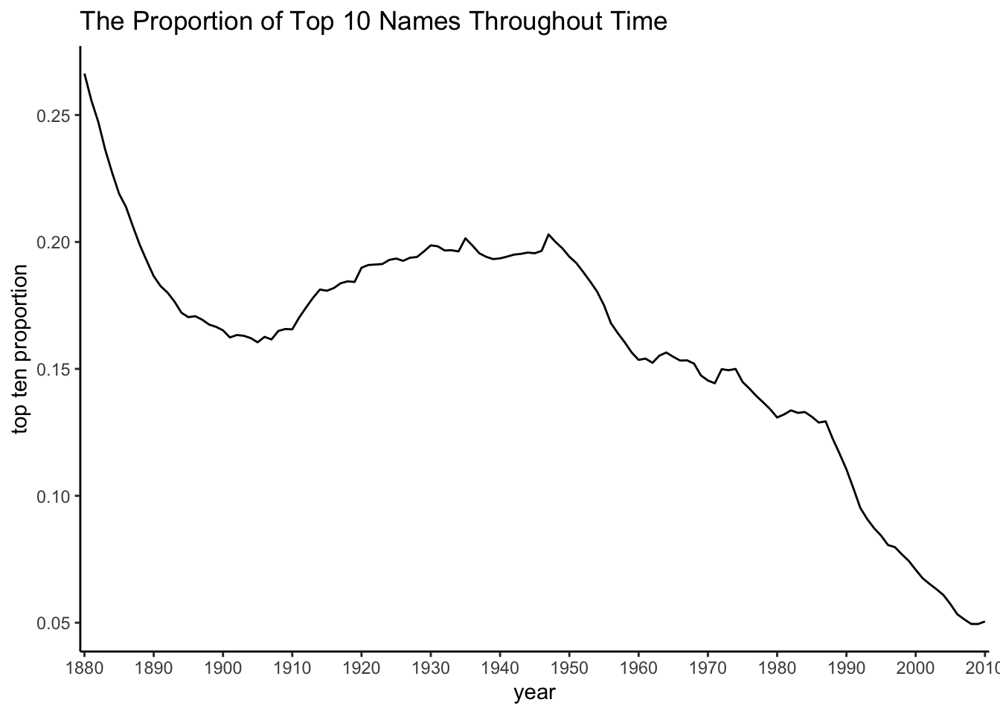
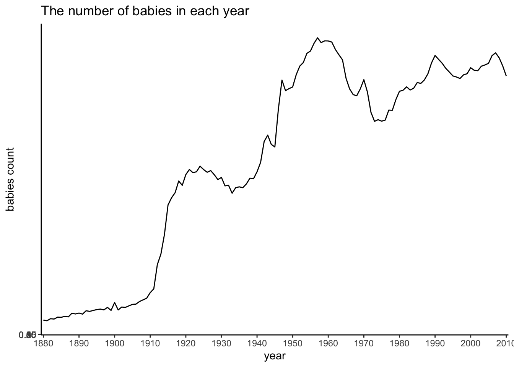
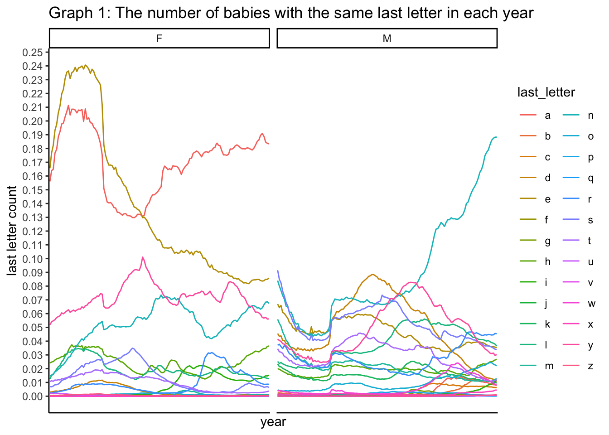
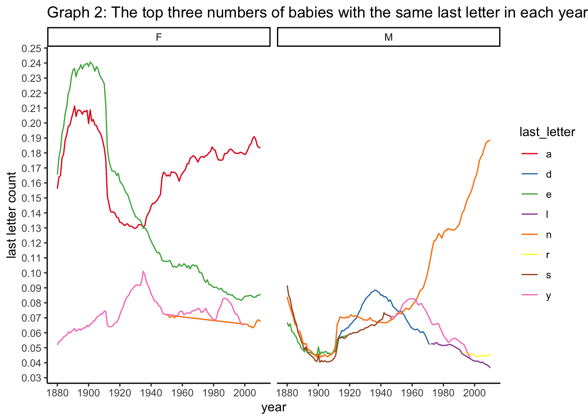
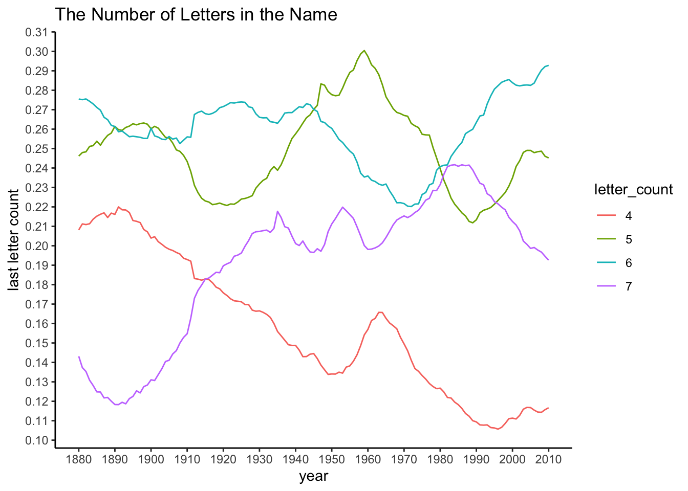
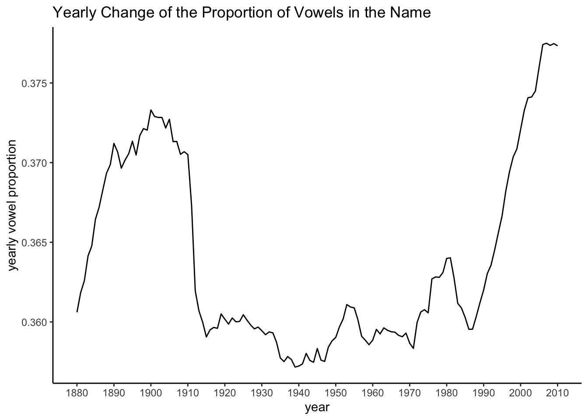
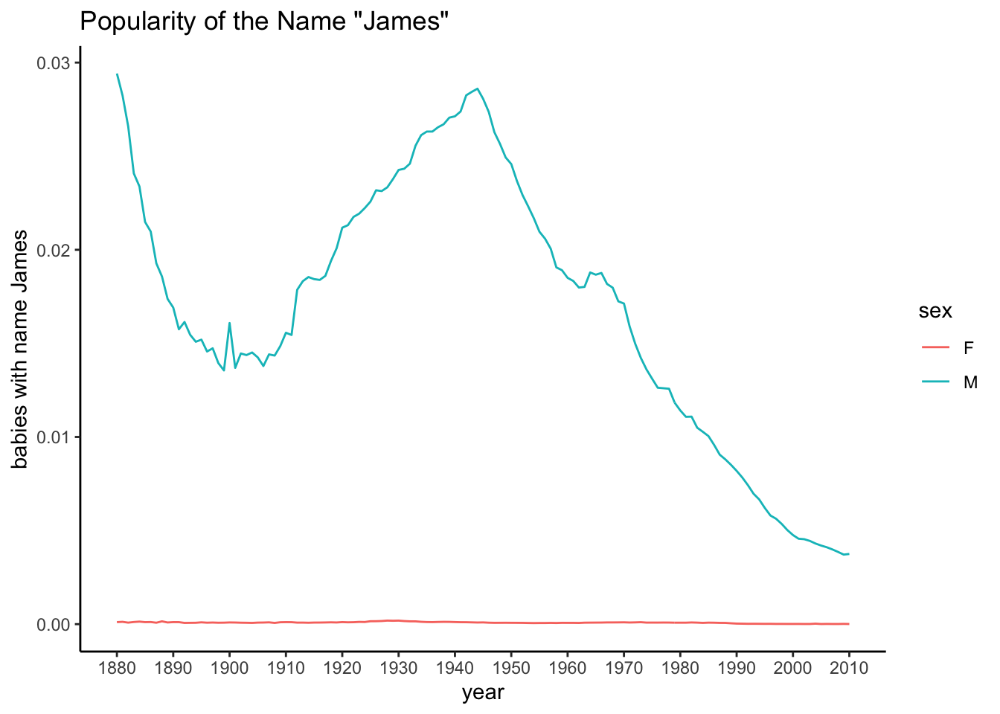

names <- read_csv("SSA-longtail-names.csv", col_types = cols(sex = col_character()))
names %>%
pivot_longer(`1880`:`2010`, names_to = "year", values_to = "baby_count") -> names_tidyAccording to the graph below, the proportion of top 10 names each year has been dropping continuously with a slight increase from year 1920 to 1950. The proportion was above 0.25 and below 0.3 in the year 1880. In the year 2010, the proportion was as low as around 0.05.

As shown in the graph below, the numbers of babies born have been increasing drastically over the years. Thus, the proportion of top 10 names calculated is not accurate in that it does not consider the change of the base population.
A strategy to parse out the generation effect is to create proportion of the amount of each name over all population at that year.

The changes of all letters over time were included in graph 1. Graph 2 only included letters with top three popularity for men and women.
From graph 1, we can see that the popularity of different last letter was more spread out among males, as most proportions of babies with the same last letter in their names were in the range of 1% to 8%. However, the popularity of different last letter was more concentrated on certain letters among females, as there were some "dominant“ proportions of babies with the same last letter in their names. This also means that the diversity of females’ last letter of theri names was less than that of males’.
From graph 2, we can see that, for female names, the letters “e” and “a” had been very popular back in 1880 to around 1920. Then, the letter “a” remained popular, but the letter “e” became less and less popular. For male names, nothing had been particularly popular, but the popoularity of the letter “n” has been increasing throughout the time, from as low as 5% in 1900 to as high as 19% in 2010.

I calculated the proportion of babies who had the same number of letter in their names each year. I then sorted them from large to small and observed the number of letters that had the top 3 largest proportion, all of which were in 4,5,6,7. For the sake of illustrating the change over time better, I only used these four letter counts to make the graph.
From the graph, we can see that names with 5 or 6 letters has remained pretty popular throughout time.Names with 5 letters had reach up to 30% of popularity in 1960 but had been dropping since then. Names with 6 letters had been increasingly popular, from 22% at around 1970 to 29% in 2010. Names with four letters were pretty popular (22%) before 1900s, but then the popularity kept dropping, with a bump to 17% in the 1970s, to about 12% in 2010. Names with 7 letters has become more popular as time went on, from around 13% before 1900 to about 21% during 1930 to 1960, and to 24% in 1990. The popularity dropped back to 20% in 2010.

I calculated the yearly proportion of vowels in names using the weighted average of the proportion of vowels in each name. The proportion of vowels had raised from year 1880 to 1890, and it had dropped from year 1890 to 1910. It was at around 36% during the years 1910 to 1970. The proportion has increased since then to above 37.5% in 2010.

My own name is very rare in the US, so I choose the name James from the movie series James Bond. Note that I have used baby_count_proportion instead of baby_count to account for the effect of increasing population throughout the years.
As shown in the graph, since “James” is a name for males, it is normal to see that there has been almost no female James throughout history. Among males, the name has been relatively popular in 1880: about 3% of babies were named James at this year. The popularity dropped since then to around 1.5% at year 1900 to 1910. Then, the name became more popular again with a gradual increase back to around 3% around the year 1945. Since then, the popularity of the name dropped again to about 0.5% in the year 2010, with a little bump at around year 1965.
The first James Bond movie was out in the year 1962, which might explain the slight bump at around 1965. However, the name had been more popular back in the history. Back in the 17th century, there was a Scottish king with the name James. He later became the first ruler of all Britain, which might explain why this name was popular around 1880 (probably the names had been popular even before 1880, but we don’t have data for that). The second peak of the popularity of this name may be because the form James is used in the New Testament as the name of two of Christ’s apostles. Back in the 1940s-1950s, people were much more religious, and they might prefer to name their children James. (All sources of the info mentioned are from the internet.)

I set my excluding criteria at names that were used by less than 0.1% of babies in the year 1880 to avoid the potential problem with rare names. According to this criteria, the name with the most sudden increase of popularity was Etta at year 2002, with a 75.9% increase. The name with the most sudden decrease of popularity was Homer at year 2003, with a 250.3% decrease.
names_tidy%>%
ungroup() %>%
subset(baby_count_proportion < 0.001 & year == 1880) %>%
select(X1, name) -> excludes
names_tidy %>%
ungroup() %>%
anti_join(excludes, by = "X1") %>%
group_by(name)%>%
mutate(oneyear_before_proportion = lag(baby_count_proportion, k=1))%>%
mutate(change_of_popularity = (( baby_count_proportion - oneyear_before_proportion)/baby_count_proportion))%>%
filter(change_of_popularity != -Inf) %>%
filter(oneyear_before_proportion != 0) %>%
filter(baby_count_proportion != 0) %>%
ungroup() %>%
filter(change_of_popularity == min(change_of_popularity) | change_of_popularity == max(change_of_popularity))## # A tibble: 2 x 9
## X1 name sex year baby_count yearly_babycount baby_count_proportion oneyear_before_proportion change_of_popularity
## <dbl> <chr> <chr> <chr> <dbl> <dbl> <dbl> <dbl> <dbl>
## 1 72 Etta F 2002 29 3733299 0.00000777 0.00000187 0.759
## 2 61482 Homer M 2003 9 3796845 0.00000237 0.00000830 -2.50